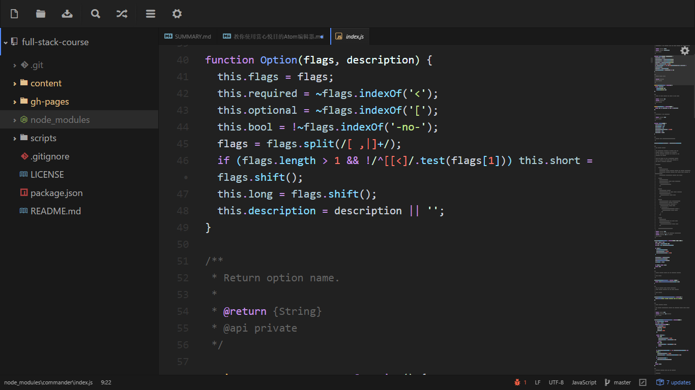

教你使用赏心悦目的Atom编辑器

在代码编辑器、文本编辑器领域，有着不少的「神器」级的产品，如历史悠久的 VIM、Emacs 以及如今当红的 SublimeText。另外还有 VS Code、EditPlus、NotePad++、UltraEdit 等一大堆流行的利器，可谓百家争鸣。
然而，作为目前全球范围内影响力最大的代码仓库/开源社区，GitHub 的程序员们并不满足于此。他们使用目前最先进流行的技术重新打造了一款称为“属于21世纪”的代码编辑器——Atom， 它开源免费跨平台，并且整合 GIT 并提供类似 SublimeText 的包管理功能，支持插件扩展，可配置性非常高……
下载和安装
https://atom.io/
命令面板
当你按下 cmd-shift-P 并且当前焦点在一个窗格上的时候，命令面板就会弹出来。
在这个教程中我们会用类似 cmd-shift-P 的形式来运行命令，这是 Atom 在 Mac 上的默认快捷键，如果你在其他的平台上使用 Atom, 可能会稍有不同。如果某个快捷键无法工作，你可以通过命令面板来查找正确的快捷键。
在 Atom 中几乎所有的操作都通过这种搜索驱动的菜单来完成，你只需要按下 cmd-shift-P 来搜索命令，而不必在复杂的传统菜单栏间点来点去。

偏好设置
Atom 有很多选项和偏好设置，你可以在设置界面修改它们。

插件
- sentui
- file-icons
- markdown-preview
- autocomplete-paths
- docblockr
- emmet
- minimap
- react